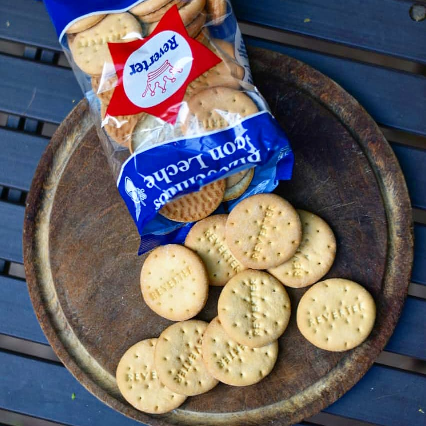

Dulces
Los clásicos bizcochitos dulces que nos acompañan desde 1949. Sabor incomparable y dulce.

Grasa
Los llamado "golosos" por muchos, estos bizcochitos hechos a base de grasa son perfectos para el mate.

Leche
Con un sabor a vainilla con leche, estos bizcochitos se convirtieron en los favoritos de muchos. La mejor idea lejos es untarlos con Dulce de Leche y hacer que tu paladar explote de tanto sabor.